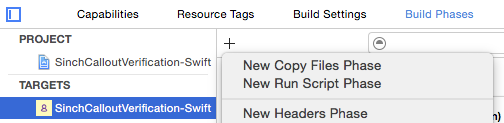
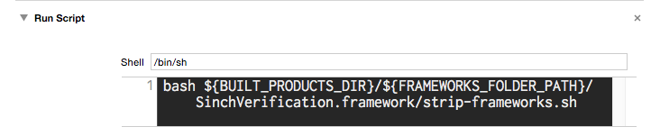

The Sinch Verification SDK makes verifying phone numbers easy. The Sinch Verification SDK for iOS supports verification of phone numbers via SMS and callout.
This document provides an overview for developers integrating with Sinch Verification SDK for the first time. Please see the Reference Documentation for a comprehensive description of all the classes.
This is a step-by-step guide about setting up the Sinch Verification SDK for the first time.
The Sinch Verification SDK can be downloaded at www.sinch.com/download/. It contains: the library binary, this user guide, reference documentation, and sample apps.
Drag the SinchVerification.framework folder from the SDK distribution package folder into the Frameworks section of the Project Navigator.
The Sinch Verification SDK depends on the following libraries and frameworks: libc++, libicucore, SystemConfiguration.framework and CoreTelephony.framework , which must all be added to the project and linked with the application target.
If you are using CocoaPods, add the following to your Podfile:
pod 'SinchVerification'
Verification of a phone number is performed in two steps, a verification SMS is requested and a verification code for that particular verification session is sent to the recipient. It’s the responsibility of the developer to ask the end-user to provide the verification code from the SMS.
To initiate a SMS verification, start by creating a SINVerification, then request an SMS by invoking -[SINVerification initiateWithCompletionHandler:].
// Get user's current region by carrier info
NSString* defaultRegion = [SINDeviceRegion currentCountryCode];
NSError *parseError = nil;
id<SINPhoneNumber> phoneNumber = [SINPhoneNumberUtil() parse:@"<user input>"
defaultRegion:defaultRegion
error:&parseError];
if (!phoneNumber){
// Handle invalid user input
}
NSString *phoneNumberInE164 = [SINPhoneNumberUtil() formatNumber:phoneNumber
format:SINPhoneNumberFormatE164];
id<SINVerification> verification = [SINVerification SMSVerificationWithApplicationKey:@"<application key>"
phoneNumber:phoneNumberInE164];
self.verification = verification; // retain the verification instance
[verification initiateWithCompletionHandler:^(BOOL success, NSError *error) {
if (success) {
// Show UI for entering the code which will be received via SMS
}
}];
The call to initiateWithCompletionHandler: triggers sending a verification SMS. This method can be called multiple times, in case another SMS should be sent.
IMPORTANT: When passing a number as a NSString* to create a SINVerification, the string should contain a number in E.164 format. See the section Phone numbers for details.
To complete the verification of the phone number, the user should be instructed to enter the code from the SMS to the application, and the code should be passed to -[SINVerification verifyCode:completionHandler:]. For example:
- (IBAction)done:(id)sender {
// User pressed a "Done" button after entering the code from the SMS.
NSString* code = @"<get code from user input text field>";
[self.verification verifyCode:code
completionHandler:^(BOOL success, NSError* error) {
if (success) {
// Phone number was successfully verified
} else {
// Ask user to re-attempt verification
}
}];
}
The method verifyCode:completionHandler: may be invoked multiple times (for a limited number of times within a short duration). So for example, if the completion handler is invoked with an NSError with domain SINVerificationErrorDomain and code SINVerificationErrorInvalidInput or SINVerificationErrorIncorrectCode, the application may hint to the user that the code was incorrect, let the user adjust it, and call verifyCode:completionHandler: once again on the same SINVerification-instance.
Verification of a phone number is performed in one step: a PSTN call to the end-user phone is placed and a text-to-speech or recorded voice will instruct the end-user to press a digit.
To initiate a callout verification, start by creating a SINVerification, then request a callout by invoking -[SINVerification initiateWithCompletionHandler:.
// Get user's current region by carrier info
NSString* defaultRegion = [SINDeviceRegion currentCountryCode];
NSError *parseError = nil;
id<SINPhoneNumber> phoneNumber = [SINPhoneNumberUtil() parse:@"<user input>"
defaultRegion:defaultRegion
error:&parseError];
if (!phoneNumber){
// Handle invalid user input
}
NSString *phoneNumberInE164 = [SINPhoneNumberUtil() formatNumber:phoneNumber
format:SINPhoneNumberFormatE164];
id<SINVerification> verification = [SINVerification calloutVerificationWithApplicationKey:@"<application key>"
phoneNumber:phoneNumberInE164];
[verification initiateWithCompletionHandler:^(BOOL success, NSError *error) {
if (success) {
// User's phone number was successfully verified
} else {
if ([error.domain isEqualToString:SINVerificationErrorDomain] &&
error.code == SINVerificationErrorCancelled) {
// Handle cancellation error code separately
NSLog(@"Verification cancelled: %@", error);
} else {
// Inform user of error, e.g. that input was invalid.
}
}
}];
IMPORTANT: When passing a number as a NSString* to create a SINVerification, the string should contain a number in E.164 format. See the section Phone numbers for details.
The method initiateWithCompletionHandler: should not be invoked multiple times. If the application UI flow is structured so that a user can initiate retries for callout verification, it is recommended to create a new instance of SINVerification for each attempt.
As shown in the earlier examples, the completion handler blocks can indicate a successful or a failed outcome for both the initiate and the verify steps. Here are some general guidelines on how to use the completion handler in your application’s flow:
The completion handler blocks are passed an NSError when a failure occurs. These errors can have an error domain SINVerificationErrorDomain for which the error codes listed in SINVerificationError.h are applicable, but they can also have a generic Cocoa / Foundation error domain, for example, network-connectivity related errors.
Note that the following error codes can be recovered from by asking the user for new input:
SINVerificationErrorInvalidInputSINVerificationErrorIncorrectCodeIMPORTANT: If a verification is cancelled, the error code SINVerificationErrorCancelled will be given. It is important that the application handle this error code in a way that is not annoying the user. E.g. a cancellation is often a consequence of the user’s actions so it is in a sense an expected outcome and should in most cases not be shown as an error in a UIAlert (or similar).
The Sinch Verification SDK will try to resend HTTP requests to the Sinch backend if such a request failed due to a network-related error. For example, if a request fails due to the user not having internet connectivity, or the request simply timed out, the SDK schedules a number of retries within 30 seconds. But unless it succeeds during those retries, it will eventually invoke the completion handler blocks with the underlying NSError. For example, it would use domain NSURLErrorDomain and error code NSURLErrorNotConnectedToInternet.
For each call to [SINVerification initiateWithCompletionHandler:], the Sinch backend performs a callback to the application backend to allow or disallow the initiation of an SMS call or a callout. By using the optional parameter custom on [SINVerification SMSVerificationWithApplicationKey:phoneNumber:custom] or [SINVerification calloutVerificationWithApplicationKey:phoneNumber:custom], any unique identifier can be passed from the application to the application backend. The data is passed as a string. If there is a need for a more complex datatype, it needs to be stringified or encoded before being sent.
The phone number should be specified according to the E.164 number formatting (http://en.wikipedia.org/wiki/E.164) recommendation and should be prefixed with a +. For example, to verify the US phone number 415 555 0101, the phone number should be specified as +14155550101. The + is the required prefix and the US country code 1 prepended to the local subscriber number.
The Sinch SDK provides APIs for parsing and formatting phone numbers. The primary class for this functionality is SINPhoneNumberUtil. A key thing when parsing user input as a phone number is the concept of default region; if a user enters their number in a local format, the parsing must know which region / country to assume. Example:
// Get user's current region by carrier info
NSString* defaultRegion = [SINDeviceRegion currentCountryCode];
NSError *parseError = nil;
id<SINPhoneNumber> phoneNumber = [SINPhoneNumberUtil() parse:@"<user input>"
defaultRegion:defaultRegion
error:&parseError];
IMPORTANT: When passing a number as a NSString* to create a SINVerification, the string should contain a number in E.164 format.
A number that have been parsed into a id<SINPhoneNumber> can then be formatted as E.164:
NSString *phoneNumberInE164 = [SINPhoneNumberUtil() formatNumber:phoneNumber
format:SINPhoneNumberFormatE164];
For better verification performance, it should be straightforward and easy for users to enter their phone numbers. To simplify this step and build a UI that accurately captures the correct input from the users, the Sinch SDK provides some utility APIs.
The class SINUITextFieldPhoneNumberFormatter provides “As-You-Type-Formatting” on a UITextField. Example usage:
UITextField* textField = ... // your text field
NSString* defaultRegion = [SINDeviceregion currentCountryCode];
SINUITextFieldPhoneNumberFormatter* formatter;
formatter = [[SINUITextFieldPhoneNumberFormatter alloc] initWithCountryCode:defaultRegion];
formatter.textField = textField;
textField.placeholder = [formatter exampleNumberWithFormat:SINPhoneNumberFormatNational];
formatter.onTextFieldTextDidChange = ^(UITextField *textField) {
BOOL isViablePhoneNumber = [SINPhoneNumberUtil() isPossibleNumber:textField.text fromRegion:defaultRegion error:nil]
// Update UI based, e.g. color text field based on result
};
Example how As-You-Type-Formatting can look for the user:
Example of populating a UITableView with a list of countries and their country calling code (in Swift):
var regions: Array<SINRegionInfo> = [];
let regionList = PhoneNumberUtil().regionList(forLocale: NSLocale.currentLocale());
regions = regionList.entries.sort({ (a: SINRegionInfo, b: SINRegionInfo) -> Bool in
return a.countryDisplayName < b.countryDisplayName;
})
Then as for the UITableViewDataSource:
override func tableView(tableView: UITableView, cellForRowAtIndexPath indexPath: NSIndexPath) -> UITableViewCell {
let cell = tableView.dequeueReusableCellWithIdentifier(...)
let region = regions[indexPath.row];
cell.textLabel?.text = entry.countryDisplayName;
cell.detailTextLabel?.text = String(format:"(+%@)", entry.countryCallingCode);
return cell;
}
The Sinch Verification iOS SDK is also available for Swift.
import SinchVerification;
do {
let input = "<user input>"
// Get user's current region by carrier info
let defaultRegion = DeviceRegion.currentCountryCode()
let phoneNumber = try PhoneNumberUtil().parse(text, defaultRegion:defaultRegion)
let phoneNumberE164 = PhoneNumberUtil().format(phoneNumber, format: PhoneNumberFormat.E164)
let verification = SMSVerification(applicationKey:"<APP KEY>", phoneNumber: phoneNumberInE164)
verification.initiate { (success: Bool, error: NSError?) -> Void in
// handle outcome
}
let code = "<user input code from SMS>"
verification.verify(code, completion: { (success: Bool, error:NSError?) -> Void in
// handle outcome
})
} catch let error as PhoneNumberParseError {
// Handle phone number parsing error, i.e. invalid user input.
}
If you are using CocoaPods, add the following to your Podfile:
platform :ios, '8.0'
use_frameworks!
pod 'SinchVerification-Swift'
(Note: The directive use_frameworks! is necessary to make cocoapods add the framework to ‘Embedded Binaries’)
1) In the Sinch Verification SDK package (SinchVerification-iOS-{VERSION}.tar) there is a SinchVerification.framework bundle in the directory named swift:
2) Add it to the Xcode target build settings section Embedded Binaries (under General):
3) In the Xcode target build settings, verify that the setting Runpath Search Paths is set to @executable_path/Frameworks.
4) Setup to run strip-frameworks.sh as a “Run Script Phase”
Create a new “Run Script Phase” in your application target’s “Build Phases” and paste the following snippet:
bash ${BUILT_PRODUCTS_DIR}/${FRAMEWORKS_FOLDER_PATH}/SinchVerification.framework/strip-frameworks.sh


(This step is required to work around an App Store / iTunes Connect bug)
5) Make sure that libc++ and libicucore are linked (See here)
Now the SDK can be imported as follows (from any of your .swift files)
import SinchVerification
(Note: This import method requires iOS Deployment Target iOS 8.0 or above)
Q: Does the Sinch SDK handle network connectivity errors?
A: Yes to some extent, see the section Network connectivity errors
Q: What is the size footprint of the Sinch Verification SDK?
A: Please see SinchVerification.framework file size vs. linked size
Q: How do I resolve linker errors, such as:
Undefined symbols for architecture:
"_SCNetworkReachabilitySetDispatchQueue", referenced from: ...
"_SCNetworkReachabilitySetCallback", referenced from: ...
"_SCNetworkReachabilityCreateWithName", referenced from: ...
"_uregex_reset", referenced from: i18n::phonenumbers::ICUCRegExp:: ...
"_utext_clone", referenced from: i18n::phonenumbers::ExtractUtf8String ...
"std::__1::basic_istream<char, ... referenced from:
"std::__1::basic_string<char, ... referenced from:
A: You must add and link against the iOS system libraries and Frameworks listed in First time setup.
Q: How do I resolve Swift linker errors (runtime errors), such as:
dyld: Library not loaded: @rpath/libswiftCore.dylib
Reason: image not found
dyld: Library not loaded: @rpath/SinchVerification.framework/SinchVerification
Reason: image not found
A: The Sinch Swift frameworks are dynamic frameworks, so make sure that you’ve added the Sinch Swift framework bundles as Embedded Binaries. Further, In the Xcode target build settings, verify that the setting Runpath Search Paths is set to @executable_path/Frameworks.
Q: My application is rejected when uploaded to the Apple App Store / iTunes Connect
Example of possible errors:
The executable for YourApp.app/Frameworks/SinchVerification.framework contains unsupported architectures '[x86_64, i386]'.
Invalid Segment Alignment. The app binary at 'YourApp.app/Frameworks/SinchVerification.framework/SinchVerification' does not have proper segment alignment. Try rebuilding the app with the latest Xcode version
The binary is invalid. The encryption info in the LC_ENCRYPTION_INFO load command is either missing or invalid, or the binary is already encrypted. This binary does not seem to have been built with Apple's linker.
A:
Alternative 1) If you are CocoaPods, make sure that the Xcode build setting Valid Architectures (VALID_ARCHS) does not contain any of the iOS Simulator architectures (i386 or x86_64). (For details, see here for details on how CocoaPods is stripping iOS Simulator architectures.)
Alternative 2) If you have manually added the SinchVerification.framework (from swift/) to Embedded Binaries, make sure you have added the strip-frameworks.sh as part of a Xcode “Run Script Phase”, see the Swift section for details.
iOS 7.0 is the minimum version required for using the Sinch SDK (iOS Deployment Target).
By default the SINSMSVerification invokes the completion handler blocks on the main thread or main GCD queue. This can be changed by using -[SINVerification setCompletionQueue:].
The SinchVerification.framework bundle includes a fat library containing the architectures armv7, arm64, i386 and x86_64. When linking an application target against the SinchVerification.framework targeting an iOS device, it will add approximately 3Mb per architecture slice.
Please check the Summary of U.S. Export Controls Applicable to Commercial Encryption Products and ensure that the application is registered for the Encryption Regulations, if applicable. It can be found under this link.